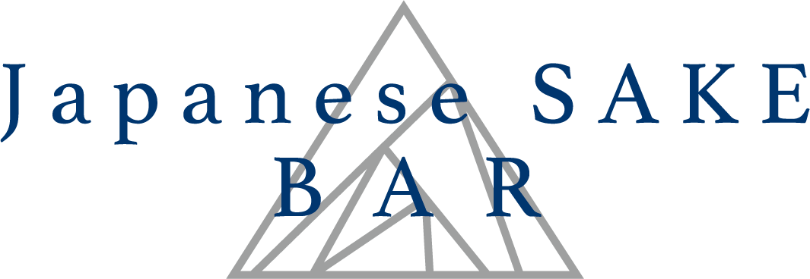
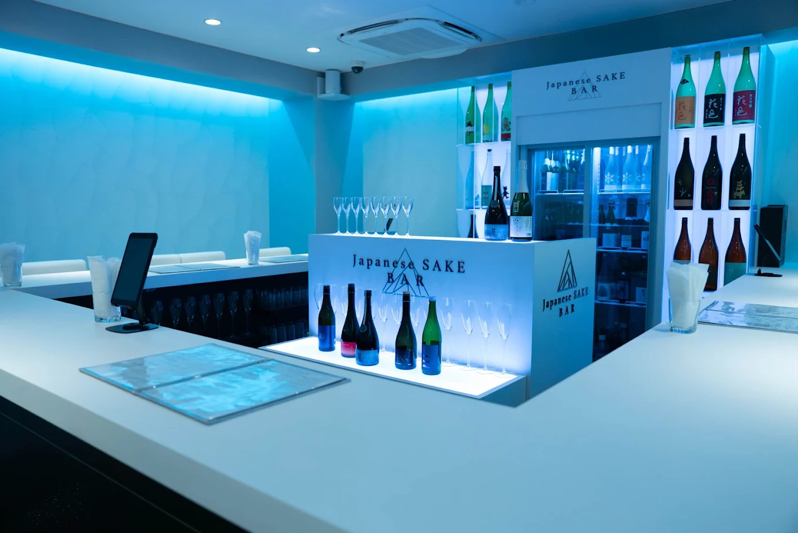

日本酒を、もっと自由に。
🥂SAKE in Kyoto mood🥂
唎酒師歴11年のオーナーが全国から選び抜いた日本酒を提供。
あなたの好みに合った日本酒をご提案させていただきます。
Enjoy a curated selection of Japan’s finest sake,
handpicked by our owner with 11 years of experience
as a Sake Sommelier.
We are here to guide you to your perfect match.
2:00PM~11:00PM
（Closed on Thursdays）
No Cover Charge｜English OK
住所：〒605-0077
京都府京都市東山区廿一軒町２３３ KONAビル ２F
京都市営地下鉄「烏丸御池駅」から徒歩8分
京阪電車「祇園四条駅」から徒歩3分
電話：075-551-2538
営業時間：14:00〜23:00
定休日：木曜
Address: 2F KONA Bldg., 233 Nijuken-cho,
Higashiyama-ku, Kyoto 605-0077
Kyoto Municipal Subway "Karasuma Oike" Station: 8-minute walk
Keihan Railway "Gion-Shijo" Station: 3-minute walk
Tel: 075-551-2538
Opening Hours: 2:00 PM - 11:00 PM
Closed on: Thursdays